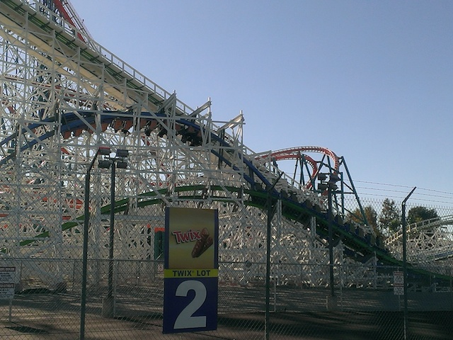

| |
Twisted Colossus Review

Today at Incrediblecoasters, we're going to be reviewing Twisted Colossus at Six Flags Magic Mountain. Now this is a Rocky Mountain Makeover, where they take an old busted sh*tty wooden coaster and turn it into a kickass crazy steel coaster. Now, I personally liked the original Colossus and thought it was good ride. But Twisted Colossus is just so much better that I don't give a flying f*ck and don't miss the ride at all. Because these RMCs are just amazing rides. I love every single one of them and any one I haven't ridden yet, I want to get on ASAP. All right. So let's get in the cars, buckle the seatbelts (Blame SFOT for all these useless seatbelts) and pull down the lap bar, and off we go. We go around a turn and into some tiny little bumps. They're kind of like Wacky Worm bumps. Hey, at least it's not straight track. But wait. Something's off here. Yep, that's right. Not only do these tiny little bumps prevent this from being straight track, but these aren't even straight bumps. They bend and bank so you get some funky laterals in them. Hey, I like little touches like this that make this a fun and interesting pre-lift. Anyways, we then turn and head up the lifthill. I'm hoping that we are racing and dueling. Cause right after opening, it was already flunking the dueling test cause...yeah. The operations are just absolutely dreadful. I swear to god, I gotta get back that old SFMM job and show these people how to run a freaking coaster. But anyways, dueling or not, this ride is awesome. Anyways, we reach the top, and down the first drop we go. HOLY CRAP!!! We get some EJECTOR AIR here in the back. It's a great little first drop. I've got some high expectations for this ride cause it's already one of the best coasters in California. We then go through this tiny little airtime hill that we not only just SHRED through, but it also provides us with this great pop of ejector air, very similar to the bump on Spongebob. We then rise up another big hill with another great pop of EJECTOR AIR!!! We then curve down a small drop before we go through one of the really crazy elements. HIGH FIVE!!! Yep, this ride has a High Five and is only the third coaster to have this element after that woodie in China (the other is actually West Coast Racers). For those who don't know, a high five is basically a completely sideways minature airtime hill on both sides of the track, and the two sides bank towards one another, so if both people on the sides of the track are raising their hands, we get the illusion that we can actually high five the other people. It is a great element and I'm hoping that Six Flags can get the operations down so more people can experience the high five with the other side. But even without the other side, the high five is still a great element that's a ton of fun. Not only cause you still at least get the illusion of being close to the track of the other side, but also, it just feels great. If you have ever experienced a strengal dive, yeah. That's what it feels like. And it is an AMAZING feeling. Anyways, we turn and head down another drop to the ground, and of course, this is accompinied by EJECTOR AIR!!! I'm dumbfounded at how much airtime there is on a California Coaster. But just keep going, it's going to get better from here. We shread through another tiny little airtime hill that actually does provide some crazy ejector air. And now comes another crazy dueling moment, provided that Six Flags is actually keeping the operations at top notch speeds. We head over a nice airtime hill that actually gives us some sustained floater air. Nice. Now look up. Yeah. The green side is right above us and upsidedown. SWEET!!! We then go through is Zero-G Roll that feels more like a corkscrew and it is STRONG. There is some serious whip to this thing. Granted, it's not Kumba crazy or anything, but it is seriously strong. We then head into a double up, but sadly, there's not much airtime here. Oh well, it's still a great ride. We go through some more banked track and a drop that's just a ton of fun. And then we head into a brake run. But nope, the ride is not over yet. Now we get to climb up the green side of the lifthill and do the other side. And hopefully if we're dueling, we get to see the other car, heading up the blue side, doing exactly what we just went through. See, even if Six Flags gets their operations down to perfection and it always duels, it's still not coaster dueling, cause we're not two sides fighting or racing. We go through both sides. So we never both end up at the finish line. One finishes while the other goes through the other side to fight again. There's no winners or losers. And besides, this ride is just too good. I'm too busy enjoying the crazy airtime and insane inversions to get into the fighting spirit. We climb up the lifthill, and it's just like DejaVu. We go down the same crazy first drop, through the same tiny ejector air hill and get another GREAT EJECTOR AIR pop, and head up the same hill and get ejected again. We then turn and go through the other half of the high five. I'm hoping that it's dueling and we get the crazy illusion, but even if not, we still get some great laterals. All right. Now the green side is gonna have its own tricks up its sleeve. We don't just dive to the ground here. We actually go down a double down here. It's not quite as crazy as Jackrabbit, where the airtime is just INSANE and out of this world, scaring the living sh*t out of you, but it definetly exists here, and man is it STRONG!!! I love the airtime on this ride and I love this element. It is just great all around. Anyways, now we head into...this crazy element. I think it's now called a Top Gun Stall, but that doesn't seem like a good term. I think I'll just call it what it is. The Upsidedown Hill. Yeah, remember when we were on the blue side and the green side was just above us upsidedown while we were going through an airtime hill. Yeah, well now we get to go upsidedown. We just flip and go through a big hill, while we're just upsidedown. It's not upsidedown airtime, but I will admit that we get a ton of hangtime here. It's just a great element. I love it and it's one of those rare roller coaster moments where you actually feel upside down and aren't just flipping through inversions for the sake of people like inversions and the fact that they look cool. Anyways, we go through a banked hill that gives us a little bit of airtime. And hey, now we're underneath the crazy Zero-G Roll from the blue side. We then go up the double up on the green side, and sadly, there's no airtime here either. We go through a couple more banked hills that are fun and all, but sadly, the ride is winding down and we glide straight into the brake run. Congratulations. Rocky Mountain Coasters, you have done it again. You worked your magic and now California has a coaster with ejector air that it's desperately needed for years now. It is a FANTASTIC ride. Now almost everybody is calling this the best coaster in Six Flags Magic Mountain and in California. And I love this ride. I really do. But...I love X2 too, and that is in my Top 10 Steel Coasters List. I love both rides and together, they kick the ass of every other coaster in Six Flags Magic Mountain. You know, the more coasters I ride, the harder it is to rank them because there are just so many great and amazing coasters out there. And I am happy that not only are there more RMCs being built, but also that there are more great coasters being built in California. Definetly check it out as it's one of the best at Six Flags Magic Mountain and on the entire West Coast. Even when it's not dueling, it's a great ride that you don't want to miss.
9/10
Location: Six Flags Magic Mountain
Opened: 2015
Built by: Rocky Mountain Coasters
Last Ridden: June 18, 2022
Twisted Collosus Photos





|